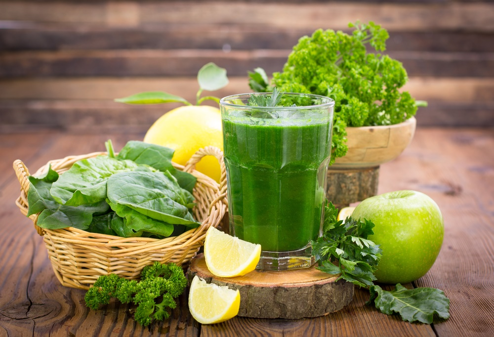

8 drinks to make before bed to detox your liver and burn fat all night long
Detoxification occurs best while we are asleep because that's when the body starts to rebuild and regenerate its tissues. According to Traditional Chinese Medicine (TCM), the liver, which represents the main detoxification organ, functions optimally between 1am and 3am.

Therefore, we need to ensure that proper conditions are present for effective detoxification to occur. One requirement for proper detoxification is that we are actually sound asleep well before this time.
Another requirement is that we have enough blood and bodily fluids for the detoxification process, so that the body doesn't become overloaded with harmful substances, which tend to be released as we detox. Proper detoxification can also lead to a healthy metabolism, which in turn can lead not only to a lowered toxin burden but also faster fat burning for those wanting to manage their body mass.
There are certain teas and drinks you can consume before bedtime that can potentially help with this important bodily function as outlined below?
8 Great Bedtime Beverages for Detoxification
Chamomile Tea
This tea is mildly bitter due to its sesquiterpene lactone content which helps the liver prime its detoxification pathways. Chamomile is also considered to have a nervine action on the body meaning that it is used to calm the nerves to help us wind down and fall asleep.
Finally, this herb has anti-inflammatory effects which further aid the body in dealing with intermediates of detoxification which can cause higher than normal levels of inflammation in the body.
Lemon Water
This is one of the drinks I routinely recommend to patients to drink throughout the day made by either squeezing fresh lemon in water or by slicing lemons and adding them to a jar of water. If using lemon slices with the peel, ensure you are using organic lemons to avoid pesticide exposure. At night lemon water helps purge toxins out of your blood.
Lemon water works best when it is warm, as cold drinks can cause a shock to the body and take heat from your digestive system to warm up. So help your body in advance by drinking warm fluids.
Jujube Fruit
This is a Chinese herb that helps to nourish liver blood again required for detoxification and fat burning. Jujube, or Da Zao, also helps to calm the mind which is perfect to help ease our stressed out brain so that we can get the good quality sleep needed for proper liver functioning.
This herb also strengthens the Spleen-Pancreas which in Chinese Medicine can get affected by an overloaded liver leading to improper digestion of foods.
Lotus Seed
This is another TCM herb (Lian Zi is the Chinese name) which can be beneficial to make as anighttime tea. This herb is useful if stress, anxiety and racing thoughts keep you up at night. It helps calm the mind and can even help if you're having heart palpitations.
Lavender can also be added to this tea to further cut down the anxiety and calm the nerves.
Rose Tea
Rose is a wonderful herb that is closely related to our heart meridian connected to our emotions. This is perhaps the reason rose has remained the symbol of love throughout the ages. Rose is very useful in ensuring the proper flow of energy from the liver as improper flow of Qi or energy can lead to depressive states. Relieving depressive states is essential for proper sleep as unhealthy thoughts lead to blood consumption which is actually needed for healthy detoxification.
Rose tea also helps the blood move throughout our body via its astringent properties due to a high tannin content which again helps remove toxins by ensuring good flow through the organs of detoxification.
Peppermint Tea
Peppermint is a very useful herb to help with many important functions. This herb is very useful especially if you have had a large meal at night since it helps the digestive process through its large quantities of essential oil content, such as menthol and menthone.
Peppermint overcomes food stagnation as a symptom of overeating that can lead to disturbed sleep. Since the liver is also involved in this digestive process, peppermint makes a great tea to help the liver with its digestive and detoxification functions.
________________________________________
________________________________________
Oat Tea
Oat tops and seeds make a great nutritional tea. This tea contains high levels of vitamins, minerals, and even proteins called avenins which are helpful for Phase I and Phase II of liver detoxification as many nutrients are consumed in this process.
Additionally, oat is another nervine herb which helps calm the mind and bring balance to our emotions as it is considered to be a nervous system re-builder.
Schizandra Berry Tea
Last but certainly not least I need to mention schizandra berries. These berries, when infused in hot water, create a nice fruity tea that can easily protect the liver from many of the harmful intermediates created through its detoxification pathways.
There are numerous studies showing the significant hepatoprotective capabilities of schizandra constituents such as its lignan content. In addition to its protective functions, schizandra berries are thought to have an adaptogenic action on the entire body meaning that it helps all body processes function optimally without increasing or decreasing pathways out of the normal range.
In Conclusion?
One thing to keep in mind with detoxification and body mass loss is that we require ample amounts of fluids. This is also something the bedtime teas above can help with as they all will add to your daily fluid intake. Also, remember that adequate sleep is essential for proper organ functioning.
Aim to be asleep around 11pm at the latest so that you are well asleep before the 1am time mentioned at the beginning of this article.
This is one of the challenges my patients face in practice and I always emphasize the point that you don't have to accomplish this overnight. You can start with changing your bedtime by at least one hour and maintaining this for a week or two until you are ready to change it by another hour and slowly accomplishing your goal.
Remember: health lifestyle and lifestyle changes take time to adjust to and you should be kind to your body by not pushing yourself too hard.
Credits to : theheartysoul